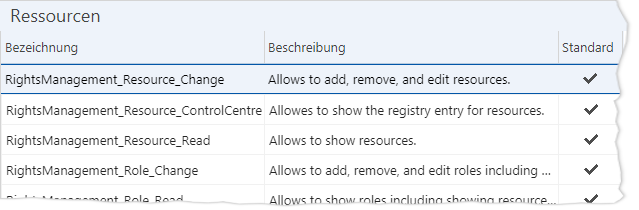
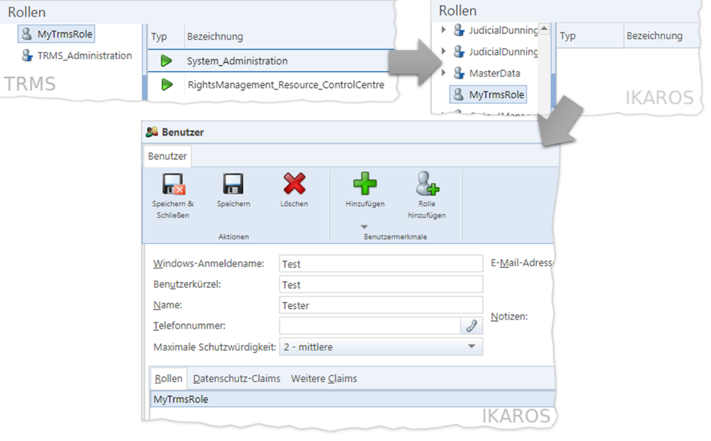

TEXT SCRAMBLING in TRIAL VERSION OUTPUT! In evaluation mode, Help+Manual will scramble individual characters in random words in your published output files. This is a limitation of the free trial version. This help system was created with an evaluation copy of Help+Manual.
Sowohl für die Bedienung und Administration des TRMS per Web-Oberfläche als für die Ansteuerung der Service-API setzt das TRMS Zugriffsrechte auf bestimmte Rechte-Ressourcen voraus.
•Im Menüpunkt „Ressourcen“ werden die einzelnen Ressourcen verwaltet.
•Unter „Rollen“ können die Ressourcen zu verschiedenen Rechtepaketen gebündelt werden, die dann konkreten TRMS-Benutzern zugewiesen werden können, um ihnen die Rechte effektiv zu gewähren.
•Unter „Claim-Transformationen (OIDC)“ können Sie Einfluss auf empfangene Authentifizierungs-Claims nehmen.
-Ausführliche Informationen hierzu finden Sie in der Dokumentation des Menüpunkts [Administration -> Rechte -> Claim-Transformationen (OIDC)] in IKAROS (Kapitel-ID in der IKAROS-Hilfe: „fs_087dc0cd8785“).
-Weitere Informationen zur Verwendung von OIDC in einer IKAROS-Landschaft finden Sie in der IKAROS-Installationsanleitung „Installation_IKAROS_Identitäts-Provider“.
Menüpunkte „Rollen“ und „Ressourcen“
Die Bedienung und die verfügbaren Schaltflächen in den Menüpunkten „Rollen“ und „Ressourcen“ im TRMS sind genauso wie in IKAROS. Weitere Informationen finden Sie in Hilfe der IKAROS-Web-Oberfläche im Kapitel mit der ID „fs_b56322097626“.
Menüpunkt „Rollen“

Abb. 39: Liste der Rollen im TRMS
Menüpunkt „Ressourcen“

Abb. 40: Liste der Ressourcen im TRMS
Benutzerverwaltung für das TRMS
Das TRMS bietet keine eigene Benutzerverwaltung. Daher gilt Folgendes:
•Im TRMS verwalten Sie die TRMS-spezifischen Ressourcen und stellen sich, ebenfalls im TRMS, Rollen mit bestimmten Ressourcenzuordnungen zusammen (falls Ihnen die vorhandene Standard-Rolle „TRMS_Administration“ nicht genügt).
•Die Bearbeitung der Benutzer, denen Sie die TRMS-Rollen zuordnen, muss in derjenigen Benutzerverwaltung geschehen, die auch für IKAROS verwendet wird.
Bei Einsatz von Keycloak ist die Verwaltung direkt in IKAROS unter [Administration -> Benutzer] möglich:
•Dort müssen Sie konkreten Nutzern die gewünschten TRMS-Rollen zuweisen. Dazu sollten sie auch in IKAROS gleichnamige Rollen anlegen. Hierbei geht es ausschließlich um den Namen der Rolle (sie muss mit dem Rollennamen aus dem TRMS identisch sein). IKAROS-Ressourcen darin werden vom TRMS ignoriert, weshalb die Rolle in IKAROS „leer“ sein darf.

Abb. 41: Ablauf zur Zuweisung einer TRMS-Rolle in IKAROS (mit Keycloak-Anbindung)